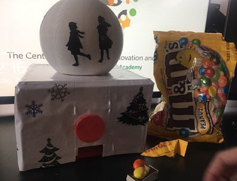
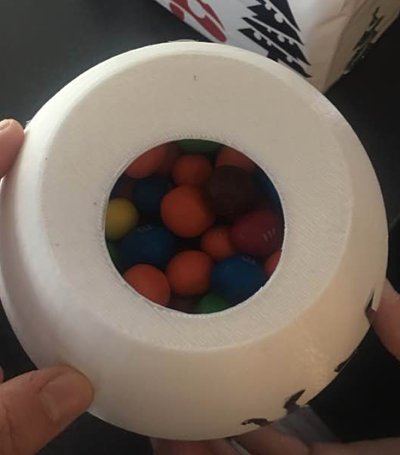

In the beginning Chelsy and I had no idea what the different steps would be to create a candy machine. We first did a lot of research and sketching different designs that might work. We created different dimensions that we wanted to stick to. A lot of these things changed along the way, but kept the basis of our project.
We printed the different pieces we designed and then hot glued them together. Some of them did not come out as we planned. The cup we made to hold the candy was too small at first, so we needed to reprint a larger one.
We laser cut a cardboard tray for the candy to fall into. Once we had put all the pieces together we realized the candy would just fall on the table, so we added a tray for it to come into.
We designed Christmas themed stickers and put them around the 3D printed block. We originally planned to just have the 3D print plastic show, but it did not turn out the way we wanted because of a couple of mishaps with the machines. We decided to make it look more put together by putting Christmas themed stickers around the candy machine. This was our final version!
 